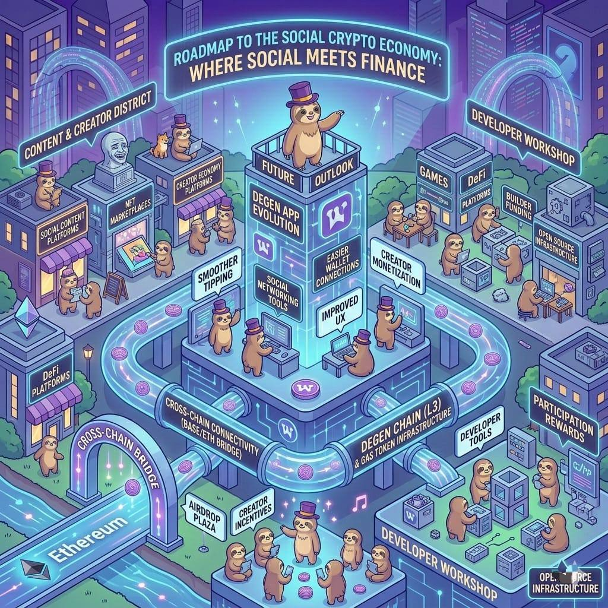

Roadmap & Future Vision
Planned products, networking tools, app evolution, and new community features.
The future of Degen (DEGEN) is focused on growing from a simple social token into a complete ecosystem of apps, tools, and blockchain infrastructure.
This roadmap describes the direction the project may take as the community and technology continue to expand.
One of the main future goals is improving the Degen App, the platform where creators post content and receive tips.
The vision for the app includes:
- better social networking tools
- easier tipping systems
- smoother wallet connections
- improved user experience
These improvements aim to make the platform feel like a crypto native social network, where users can post content and earn rewards directly from the community.
As the app evolves, creators may gain more ways to:
- monetize their content
- connect with audiences
- build communities around their work
Another major focus is expanding Degen Chain.
Degen Chain is a specialized blockchain built to support the community's needs.
It allows developers to create:
- social apps
- games
- DeFi platforms
- reward systems
Because the chain is designed specifically for the DEGEN ecosystem, it can support fast and low cost transactions, making tipping and payments easier.
In this network, the DEGEN token also acts as the gas token, meaning it is used to pay for transactions on the chain.
The roadmap also includes the development of new decentralized applications (dApps).
These applications may include:
- social content platforms
- trading tools
- NFT marketplaces
- creator economy platforms
- community reward systems
Early apps have already appeared in the ecosystem, and more are expected as developers build on Degen Chain.
These apps help transform the project from a single token into a full digital ecosystem.
Another part of the roadmap includes continued community rewards and token distributions.
Earlier airdrops rewarded active members of the Farcaster community.
Future plans include additional reward programs, such as:
- creator incentives
- community participation rewards
- ecosystem growth campaigns
For example, the project has planned further community distributions to allocate remaining tokens to users who support the ecosystem.
These incentives help maintain the community first philosophy of the project.
The ecosystem is also working toward connecting with more blockchain networks.
Through bridging technology, DEGEN can move between networks such as:
- Base
- Ethereum
- other compatible chains
Cross chain connectivity allows the token to reach more users and applications across the crypto ecosystem.
A long term goal is encouraging developers to build on the platform.
To support this, the ecosystem may offer:
- developer tools
- APIs
- funding for builders
- open source infrastructure
These resources make it easier for builders to experiment and create new ideas within the DEGEN ecosystem.
The ultimate vision of the project is to create a new type of digital economy where social media, crypto payments, creator rewards all exist in the same ecosystem.
In this model:
- creators earn directly from their audiences
- communities reward valuable contributions
- developers build new platforms around the token
This concept is sometimes described as SocialFi, where social interaction and financial incentives work together.
